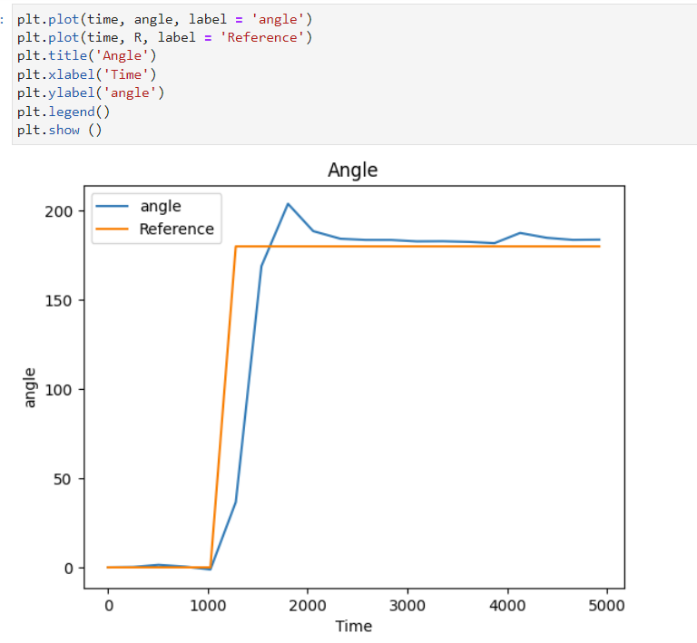

INTRODUCTION
For this lab, I implement a PID controller algorithm to do task B in Lab 6. That means using PID(Proportional, Integrator, and Derivative) control to manipulate the orientation of my robot by changing reference angles.
WIRELESS INFORMATION
Before I even started programming the controller onto my robot, I had to establish a way to figure out key values on my robot. There's no serial monitor when the robot isn't connected and there's no way to run a jerky controller algorithm freely while tethered to a six inch cable, so storing sensor values and reference values to send after a script ran was vital. To do this, I globally declared arrays for each variable I planned to store. I then made functions that waited for a previously specified amount of time before storing each value in the next position in the array. At the end of whatever trick or timer I set for later scripts, I made another function that sent it all to my computer. This made the rest of the project (especially tuning the controller) much easier. Now I could graph the data I collected in python and make conclusions on the state of my robot wirelessly, allowing me to make every plot in this report.
Above: Code to store data
Below: An example graph
IMPLEMENTING A P CONTROLLER
In order to make sure I understood the concept of angular control, I started by implementing a purely proportional controller. This involved calculating the current yaw angle from the integration of the gyroscope reading (minimizing error by taking gyroscope measurements as quickly as possible), inputting a reference angle, and calculating the error between the two. By multiplying the error by some constant gain Kp, a motor offset can be added or subtracted from the function I use to move them. By adjusting the gain I can make the system more or less responsive, however, there is a constant error present in the steady state angle. To see this, I implemented two commands: one to take inputs for my gain and reference angle (changing them remotely and bypassing the slow Arduino compile time) and another to add motor offset based on the reference. Using these functions and data packages from the arduino I got the following graphs:

Above: Error for a Proportional controller response to impulse disturbance
Below: The corresponding motor inputs as a result of the error and the code

Looking at the graphs above, we can see there is a constant error that the controller doesn't get rid of and the response isn't that quick. To fix this I added the integrator term of the controller and a derivative term to limit the oscillatory response. This final code used to orient the robot is below:
TUNING
The next part of the project was tuning the controller. Now that my controller was functional and corrected my bot well, I could use the commands I've developed thus far to repeatedly test different Kp, Ki, and Kd values until the system behaved in a way I'd like. Below is a graph of the final controller I used and the corresponding PID terms. The first reference change from 0 to 180 hold the gain constants I ended up using (Kp = 8, Ki = .5, Kd = 1).


By this point I'd discovered another problem.
GYROSCOPE LIMITS
By default, the IMU we are using contains a cap on the max rotation it outputs. This means that the integration of the gyroscope was giving me incorrect approximations for the actual robot angle. I had manually changed the cap from 250 dps to 500 dps earlier to avoid this issue but I kept seeing the cap being reached as seen below. After changing the cap to 1000 dps, I was able to get the next graph, showing values of the gyroscope no where near the maximum, which fixed the problem quite well


INTEGRATING THE TIME OF FLIGHT SENSOR
Next, the lab had me write a script that integrated the orientation controller I just made with a distance sensor reading from the TOF sensor on front of my robot. I wrote the simple script below to change the reference angle once a certain distance was met and saw some peculiar properties. When the sensor is out of range, it returns the value zero. The sensor also does not update anywhere nearly as quickly as the IMU so the values can be somewhat unreliable. Regardless, I was able to capture the below video of the whole system together and the following graphs of the successful attempt.


CONCLUSION
PID controllers have many useful applications in the manipulation of robotics. I've been surprised at how much fun I could have just plotting the angle and reference graphs. Regardless, I learned very much about the process behind implementing a PID controller and good code on a robot (like using flags rather than the command switch statemet).